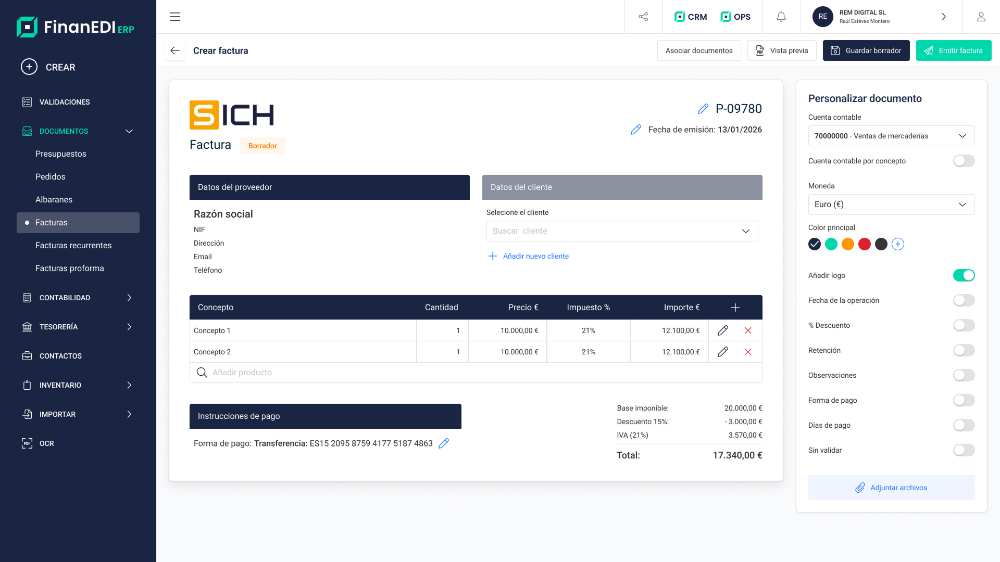
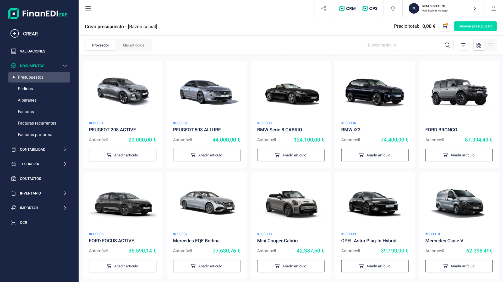
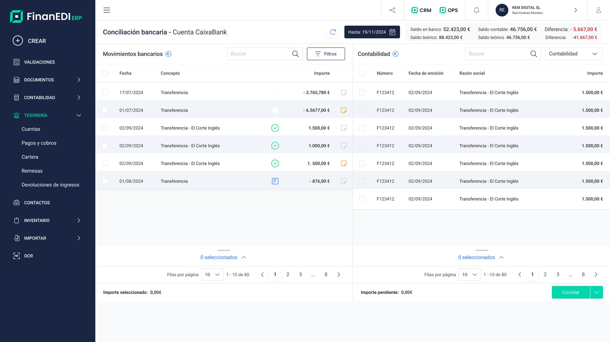
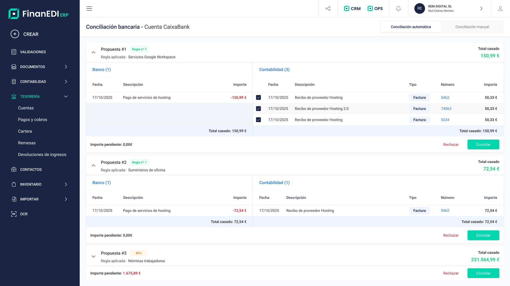
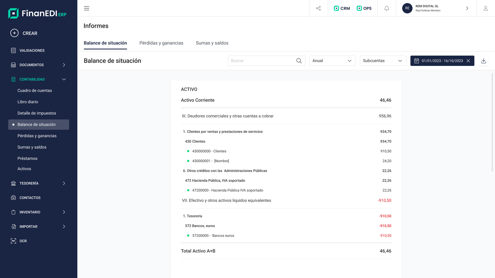

Análisis de la competencia
Estudié Holded, Billin, Contasimple, Quipu y Sage: sus funciones, sus flujos y sus puntos débiles.
- Mapa de funcionalidades por competidor.
- Análisis de UX y de los flujos clave.
- Identificación de huecos en el mercado.
ERP · Nuevo producto · Diseño de producto
Diseñé desde cero un producto que reúne facturación, contabilidad, clientes y procesos administrativos, y que adapta la complejidad técnica a personas que no son expertas en finanzas.
FinanEDI es un ERP pensado para pymes y autónomos. El reto era crear una herramienta intuitiva que simplificara la gestión del negocio sin obligar a nadie a aprender contabilidad para usarla.
¿Cómo dar a un autónomo la potencia de un ERP con la sencillez de una herramienta de uso diario?
Fui el diseñador de producto durante todo el proyecto. Estas fueron mis responsabilidades:
Trabajé con metodología ágil, en sprints de una semana y con colaboración constante con el equipo de innovación.
Empecé por un análisis del mercado de ERPs para pymes: qué ofrecía la competencia, qué era imprescindible y cuál era el mínimo viable para lanzar un producto diferenciador.
Estudié Holded, Billin, Contasimple, Quipu y Sage: sus funciones, sus flujos y sus puntos débiles.
Con el análisis armé un mapa de funciones priorizadas para validar el producto con usuarios reales cuanto antes.
Las pymes y los autónomos gestionaban sus facturas con herramientas que no encajaban con su día a día. De ahí salió la oportunidad.
Benchmarking del mercado y mapa de funcionalidades para definir el MVP.
Definición de la arquitectura de información y de los flujos principales del ERP.
Wireframes de todas las pantallas y prototipos interactivos para validar.
Un sistema propio con componentes y guías de uso.
Ciclos de mejora con el equipo de innovación, basados en datos y feedback real.
Con el producto ya en producción, detectamos una discrepancia importante en el registro: la web recibía muchos clics en los botones de alta, pero una parte mucho menor de esos usuarios terminaba completando el proceso.
El objetivo era entender en qué punto se producía el abandono y por qué.
Revisamos grabaciones de sesiones reales para analizar el comportamiento de los usuarios durante el registro.
El patrón se repetía: la mayoría avanzaba con normalidad hasta llegar al campo del DNI. En ese punto aumentaban los abandonos de forma significativa.
¿Cómo podemos solicitar un dato obligatorio y sensible sin convertirlo en una barrera para completar el registro?
El DNI era un dato obligatorio para completar el alta por requisitos normativos, por lo que eliminarlo o hacerlo opcional no era una alternativa.
La solución tenía que estar, por tanto, en cómo y cuándo pedirlo, no en eliminarlo del proceso.
Decidimos dividir el registro en varios pasos y trasladar el DNI al final del proceso.
En lugar de solicitarlo junto al resto de información inicial, primero permitimos que el usuario avanzara por los datos necesarios para comenzar el alta y dejamos el DNI como uno de los últimos pasos.
El cambio buscaba reducir la fricción inicial y evitar que un campo sensible apareciera demasiado pronto en el proceso.
La decisión de trasladar el DNI al final del registro se apoyó en el Goal-Gradient Effect, o efecto gradiente de objetivo.
Cuanto más cerca está una persona de alcanzar un objetivo, mayor suele ser su motivación para completar lo que queda.
Nuestra hipótesis era que, si el usuario encontraba el DNI demasiado pronto, podía convertirse en una barrera antes de haber avanzado en el proceso. Al trasladarlo al final, el usuario ya había completado varios pasos y estaba más cerca de finalizar su registro.
Después del cambio observamos una mejora en el comportamiento del registro:
-19 % de abandono en el registro
La solución no consistió en eliminar una información necesaria, sino en replantear el momento en el que se solicitaba.
Un flujo claro y estructurado que reduce errores y agiliza la emisión.

Un catálogo fácil de recorrer para crear pedidos, albaranes o facturas con rapidez.

Una interfaz para revisar y conciliar movimientos, con claridad y control para el usuario.

La conciliación se automatiza para reducir tareas manuales y ahorrar tiempo.

La información contable, ordenada para entender de un vistazo cómo está el negocio.
